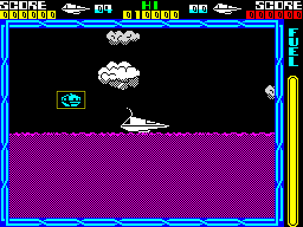
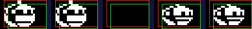

| How a moving object is drawn |
Nothing in Cyberun has a mask, and there is no screen buffer. Two drawers put moving things on the screen. The compositor, draw_sprite_pair, handles every object and star: it copies the screen rectangle covering an object's old and new images into a small buffer, rubs the old image out there, draws the new one in and copies the rectangle back -- one write to the screen per object, so nothing flickers. The direct drawer, draw_direct_pair, handles the ship, its trail, its jets and the part it carries: no buffer, but a row of the old image rubbed out and a row of the new drawn in turn, straight on the screen. This page follows one attacker and one turn of the ship through them in the simulator.
A sprite is a byte of width in bytes, a byte of height in lines, then the lines bottom line first, with no mask: everything is drawn upwards from its bottom line (line_up_hl, line_up_de), so a position's y is its bottom line. Which picture an object shows comes from object_graphic_lists -- a word per graphic number pointing at a list of frames -- and the frame in bits 0-3 of the record's +$13 (object_graphic). Colour is never part of a sprite: colour_sprite paints the cells an image covers from the record's +$0D, which holds two colours, one shown on odd passes and one on even ones, so two different nibbles flash for nothing.
Every object goes through the same sequence each pass:
Inside draw_sprite_pair:
Shifting. x is always even, so there are four positions; shift_page picks the shift tables build_shift_tables made at start-up (page n the byte shifted right, page n+1 the bits that fall into the next byte). An aligned image never uses them; a shifted one covers its width + 1 bytes.
Erase is not restore. AND NOT clears every pixel the graphic sets, including the background and any other sprite under it: overlapping sprites punch holes in each other, and the landscape survives only because it is redrawn every pass.
Flying right from the start of a game, the simulator was stopped at every call of draw_sprite_pair until it came to an attacker (record 1, type $17) that had moved to a shifted position. Its old image was at x $32, bottom line $5A, 14 rows; its new one at x $34, line $5B, 13 rows, 2 bytes wide. The box is 3 bytes by 15 rows from x $30, line $5B (yellow below). The simulator was then stopped after each stage and the buffer read out; the old image is outlined in red, the new in green:

The screen after the attacker's turn, its box in yellow.

Left to right: the screen's rectangle before; the buffer after the copy in (erase_old_draw_new); after the old image is rubbed out ($A469); after the new one is drawn (dissolve_sprite); and the screen's rectangle after the copy back. Magnified four times.
Checked as the page was built: the buffer after the copy in is exactly the screen's rectangle, and the rectangle after the copy back exactly the buffer. Over black sky the rubbing out leaves the box empty; over anything else it would leave a hole. The whole call took 10,520 T-states, about 15 per cent of a frame.
The row loops' entry points, read from the game (the first eleven words rub out, the second eleven draw, one for each width and alignment):
$A719, $A70B, $A6FD, $A6EF, erase_row_shifted, $A6D0, $A6CA, $A6C4, $A6BE, $A6B8, erase_aligned_row
$A78C, $A780, $A774, $A768, draw_row_shifted, $A74C, $A747, $A742, $A73D, $A738, draw_aligned_row
For the ship (draw_ship_image), its trail (draw_trail), the side jet (side_jet), the lift jet (lift_jet) and the pieces of a carried part (draw_carried_piece). The old image's registers are in the alternate set (HL' its screen address, DE' its graphic, IY its erase routine), the new image's in the main set (HL, DE, IX its draw routine). direct_next_pair rubs out a row of the old image and moves up a line; direct_then_new_row draws a row of the new one; when one runs out the other finishes alone. Since a row is rubbed out just before the same row of the new image is drawn, only a line or two is ever missing: no flicker without a buffer.
Mirroring. Facing left (bit 7 of ship_facing), mirror_ship_sprite and set_mirrored_drawer start each row at its last byte, pick the mirrored row routine, and turn each byte round through bit_reverse_table: one stored picture serves both facings.
Drawn over itself. The ship never moves on the screen, so draw_ship usually just draws its image over itself with OR on odd passes, which puts back any pixels an object's rubbing out took. The old image is rubbed out only when the picture changes: a turn, a part being fitted, or docking with the finished rocket.
Worked example: the ship flown up and right from the start for 30 passes, then left held. On the first pass of the turn draw_ship_image called draw_direct_pair with 14 old rows and 14 new ones; the simulator was stopped at each of its 29 row steps. A selection of them, magnified three times, the facing-right picture giving way to the mirrored one from the bottom up; the call took 9,317 T-states:
The ship turning, row by row.
The same, a row step a frame.